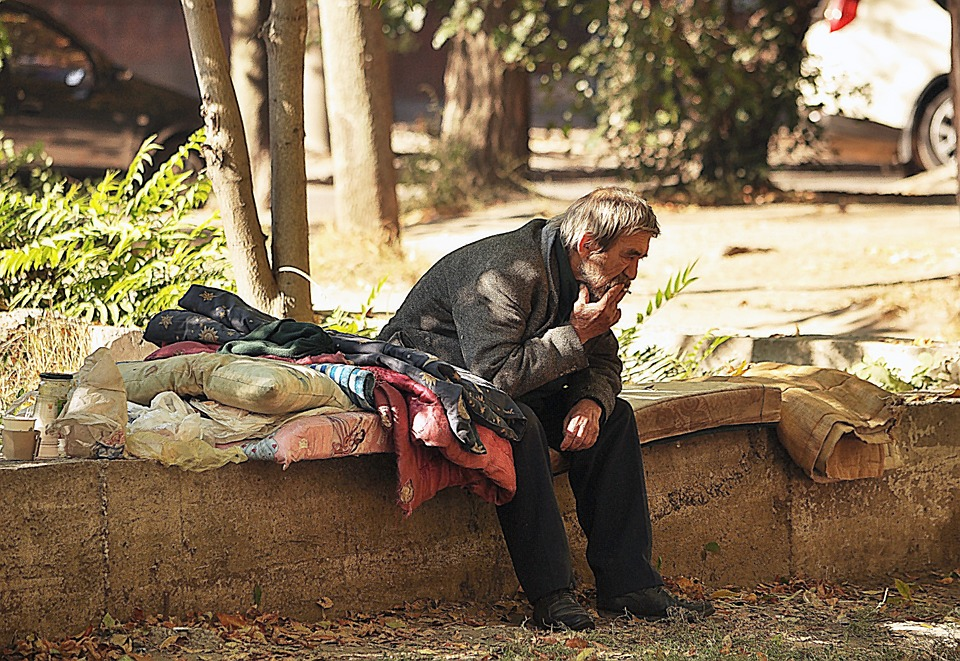

Os moradores de rua em Maringá enfrentam uma série de dificuldades, incluindo:
1. Falta de moradia adequada: Muitos moradores de rua em Maringá não têm acesso a um abrigo ou moradia adequada, o que os força a dormir nas ruas ou em locais improvisados.
2. Escassez de alimentos: Muitos moradores de rua em Maringá têm dificuldade em obter alimentos suficientes para atender às suas necessidades nutricionais diárias. Eles podem depender de bancos de alimentos e de organizações sem fins lucrativos para obter comida.
3. Dificuldades de higiene pessoal: A falta de acesso a banheiros e chuveiros adequados é um grande problema para os moradores de rua em Maringá. Eles podem ter dificuldade em manter sua higiene pessoal, o que pode levar a problemas de saúde.
4. Violência e assédio: Morar na rua pode ser perigoso, especialmente para mulheres e crianças. Os moradores de rua em Maringá podem enfrentar assédio, violência e roubo por parte de outros moradores de rua ou de pessoas que passam.
5. Problemas de saúde: A falta de acesso a cuidados médicos adequados pode levar a problemas de saúde crônicos e agravar as condições existentes. Além disso, os moradores de rua em Maringá podem ter maior probabilidade de contrair doenças devido às condições de vida precárias.
6. Discriminação: Infelizmente, os moradores de rua em Maringá podem enfrentar discriminação e estigmatização por parte da sociedade em geral. Eles podem ter dificuldade em obter emprego e moradia devido a preconceitos e estereótipos negativos.
